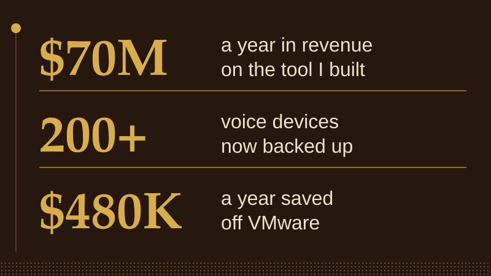

Verizon
Two summers automating network work in Richardson, TX: a provisioning tool, device backups and a move off VMware.
- Internal tools. No public link.

Two summers, three problems
I was a network engineer intern on the software and automation side, in Richardson, TX, in the summers of 2025 and 2026. The work was the kind people do by hand until someone writes it down as code: setting up carrier trunks, keeping backups of voice-network devices, and moving applications from one platform to another.
I wrote the code in Python and Bash, worked over SSH and REST APIs, and wrote runbooks so the work could be handed on. Each project below has a clear result you can count.
Two smaller pieces sit beside them. My configuration scripts cut manual configuration time by 35%. Scripts I wrote for micro-node maintenance windows removed about 90% of the manual actions during firmware updates.
Results
- $70Ma year in revenue on the tool I built
- $480Ka year saved by leaving VMware
- $2M+more savings projected
- 200+devices given backups
- 300+automatic tests in the release pipeline
The three projects
 $70M
$70MCarrier Trunk Provisioning Tool
The record system and API for carrier trunks, behind a revenue line worth $70M a year. I built it alone in Python and shipped it through a release pipeline that runs 300+ automatic tests.
Read the project 200+
200+Voice network device backups
More than 200 live voice-network devices were set to keep no backups. I proved it, automated the fix, tested it for 3+ days, stopped an unsafe rollout and handed the work to operations.
Read the project $480K
$480KMoving apps off VMware
I led the move of applications from VMware to Verizon’s internal cloud. It saves $480K a year, with $2M+ more projected from the migration framework I built.
Read the project
What I owned
- Found 200+ live voice-network devices with no backups, and automated the fix.
- Built the Carrier Trunk Provisioning Tool alone. It is the record system and API behind a $70M-a-year revenue line.
- Built a release pipeline with 300+ automatic tests.
- Moved apps off VMware to Verizon’s internal cloud, saving $480K a year, with $2M+ more projected.
- Wrote a 25+ item requirements spec and handed the backup work to operations.
What I learned
- Start with a count. The backup work began with a number of devices that had no backups, and that number made the case on its own.
- Test the thing you will rely on. A 300-test gate is what let releases go out with no manual deploy steps.
- Write it down for the next person. The 25+ item spec and the runbooks are what let operations own the work after I handed it over.